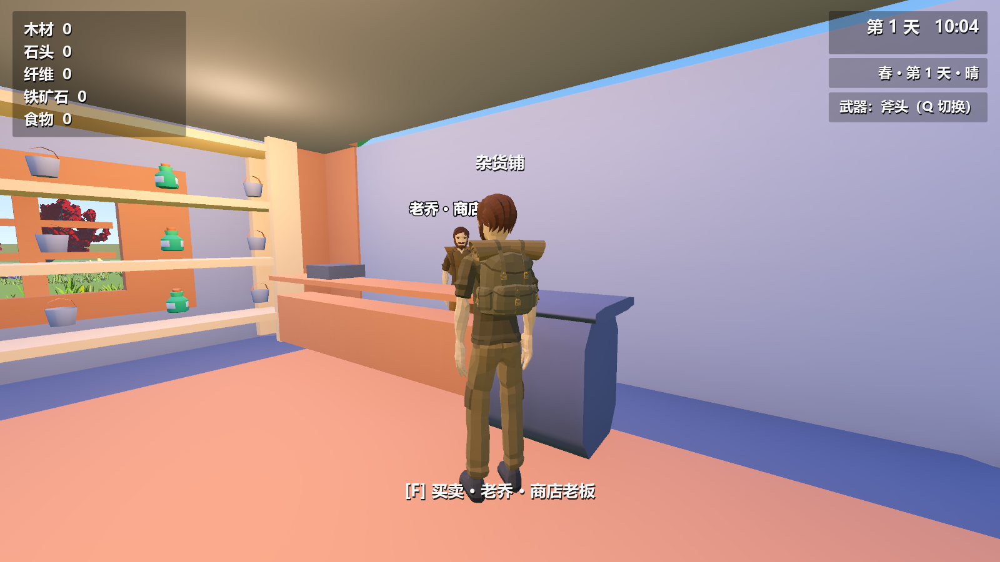
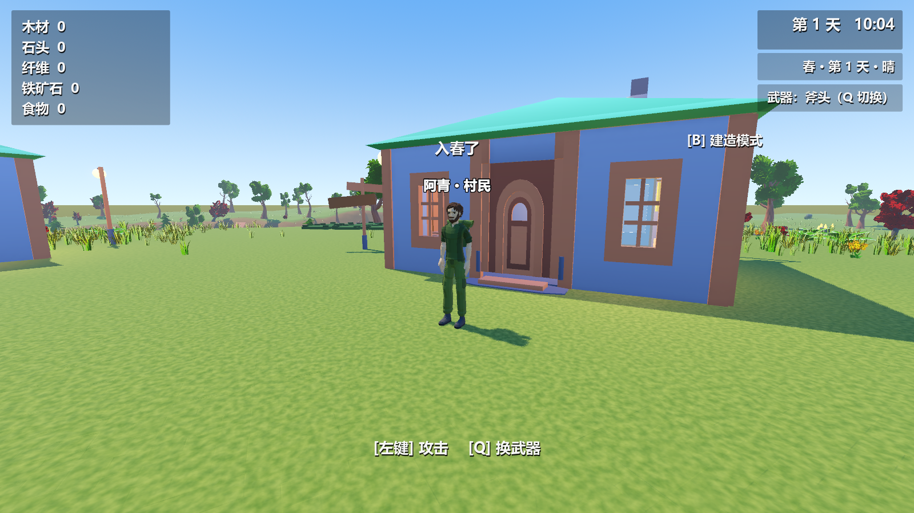
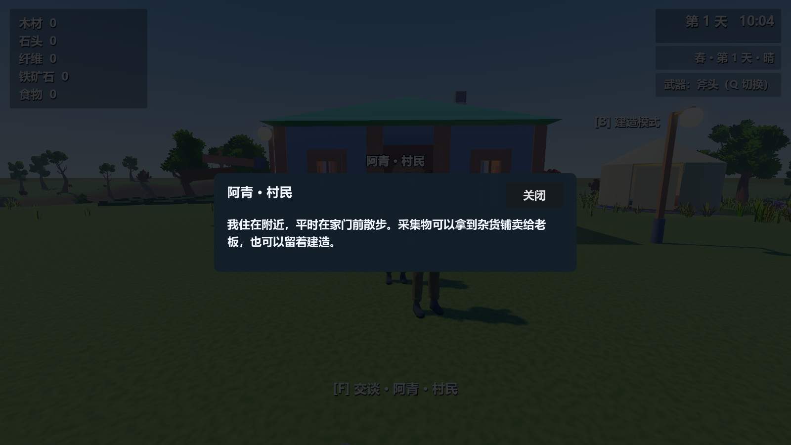
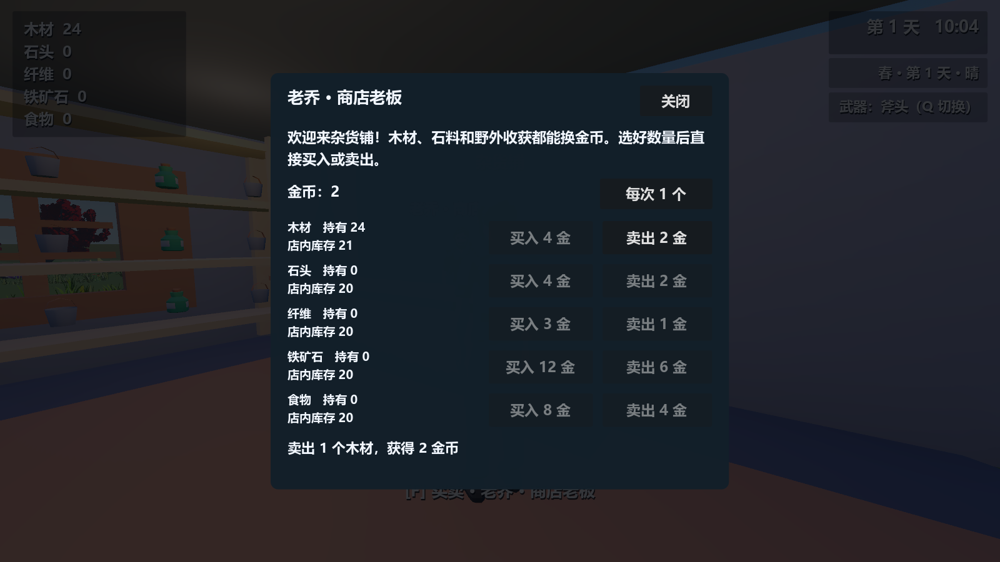
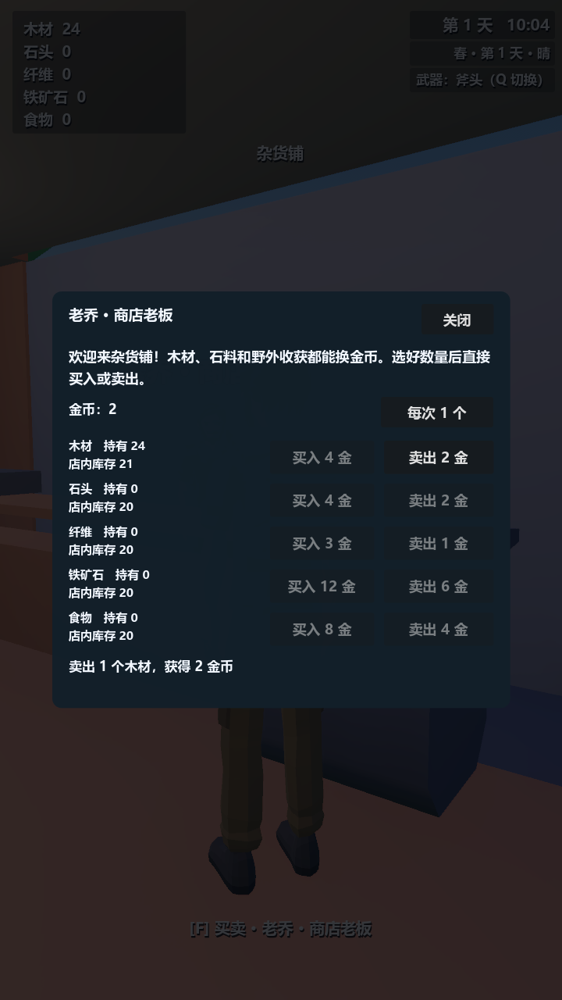

小镇里有人了，也能买卖了
1 位商店老板留在真实柜台后，3 位村民在各自家门附近随机停留、转身和散步。靠近按 F 或触控「使用」交谈；门口优先开关门，避免路过的村民抢走进出操作。

步态与实际行走一起变化

上方为实际运行的关键帧截图，非连续视频。使用仓库已有的 Quaternius CC0 人物与动画，通过姓名和衣裤配色区分，皮肤保持原材质。移动沿身体朝向推进；碰撞后实际位移决定播放速度，停下后恢复自然待机。友好 NPC 有胶囊碰撞，不加入狩猎与动物掉落列表。
| 60 秒物理帧采样 | 实际走过距离 | 离活动中心最远 | 不同米格 |
|---|---|---|---|
| 林叔 | 41.94 米 | 5.72 米 | 42 |
| 阿青 | 44.04 米 | 6.35 米 | 45 |
| 小夏 | 43.10 米 | 6.47 米 | 32 |
活动半径上限 7 米，步速 1.25 米/秒。采样覆盖 3600 个物理帧和圆盘内不同位置，未进水、未穿入房屋、未出现侧滑；遇到障碍停步并重新选择目标。独立随机流保留原地图的 191 个采集点及其指纹。

先卖出收获，再采购资源
金币从 0 开始，在交易窗口与背包统计中查看。点击窗口右上的数量按钮切换每次 1 或 10 个。每种库存每天补至至少 20，老板收购到的库存继续保留；缺钱、缺物或缺货会拒绝交易，金币、背包与库存全部保持原值。
| 资源 | 买入总价 | 卖出总价 |
|---|


存档与验证
金币、库存、补货日期、NPC 实际位置、活动目标、停留时间和独立随机状态随存档保存。随机状态用十进制字符串，防止 JSON 丢失 64 位精度。旧存档从零金币和默认库存开始，保留原资源和建造物。
| 检查 | 结果 |
|---|---|
| NPC、买卖、真实 JSON 存读档、交易窗口 8 种分辨率 | 711 项，fails=0 |
| 战斗 / 水域 / 连续进出 / 物理 / 骨骼动作 | 102 / 38 / 198 / 23 / 58 项，fails=0 |
| 端到端存读档 | fails=0 |
| UI / 房屋道具 / 完整道具 / 植被 | 1587 / 34 / 90 / 183 项，fails=0 |
| 8 种分辨率触控布局 | 全部 bad=0 |
| 交付资产与外部引用 | 119 场景、19 贴图、155 贴图表面、187 依赖，failed=false |
验证在独立副本中完成，未覆盖个人存档；已查看窗口模式的待机、走路、停步及横竖屏截图。部分自检仍有退出时 ObjectDB 清理警告，未宣称无警告。未重新导出安装包或发布 Release，未做安卓实机性能与触控测试。